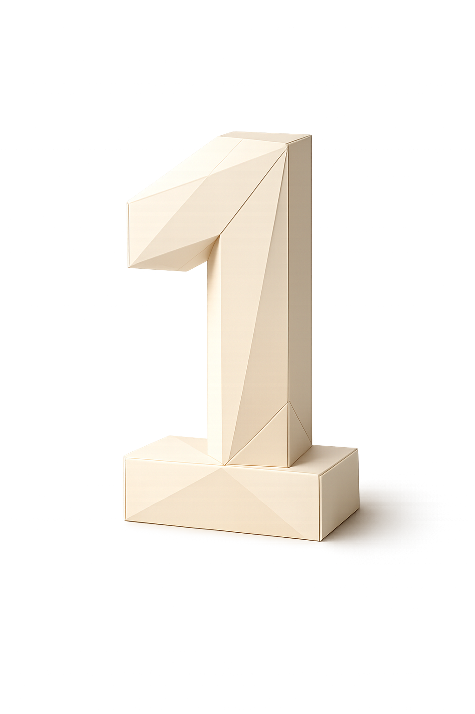

One text per day. No spam. Unsubscribe anytime. Free while we can.
You're in.
Please confirm your phone number by responding to the text.

Wake up to a question you weren't expecting
Laugh first, think about it later
Reply if you want. It becomes your journal
Answer if you wish — your answers become a journal over time, and Philogelos will occasionally write back with something between a roast and an epiphany.